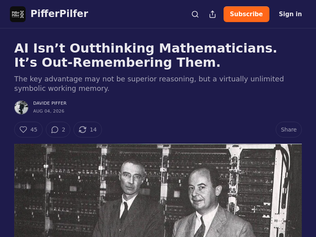
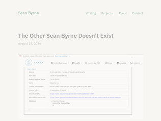
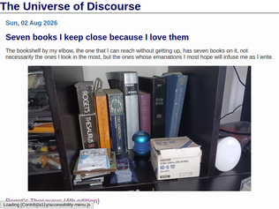

"My master's thesis is on a topic in this field (Privacy Preserving ML) and from my understanding HE and other techniques have very high overheads(~10^3) on inference tasks and thus aren't very commercially viable."
"So much inefficiency just to run it on someone else's untrusted hardware. Private AI is already possible today with local open-weight models running on hardware you control.Homomorphic encryption is cool technology, but I'm really not sure what problem it solves."
"Great, private AI, at the cost of >1000x the resource usage. Because apparently AI companies weren't already using quite enough energy to cook the planet.The most private AI is the one running on my own hardware, not in some giant data center."

"I suspect that a lot about what we call being very intelligent is ultimately out-remembering people around us. I think of all the times in my software career when I did something that others considered very high performance, it either came down to either having more energy than others at tackling a problem they thought was more trouble than it was worth, or just bringing back random knowledge from previous jobs or self study, and being able to apply it to the problem at hand.I don't think I've had a truly original idea in my life. Combine A + B, when it's rare for people to know A and B at the same time. So from that perspective, what LLMs are doing is basically the same thing. Sometimes I am faster than the LLM because my context might be better organized, but it typically needs just a hint from me to steer itself correctly. It claims something is a memory leak, but smelling a rat, I suggest it to double check the garbage collection statistics too, at which point it's clear it's no leak, but a tuning error, at which point the LLM is better at tuning than me, because it has more energy than I do.Maybe there's true brilliance out there, when something doesn't come out of combining data and building hypothesis until you get really lucky. My experience is not comprehensive. But I look around me, and it sure seems I've not been lucky enough to see it. Even the shiniest people I've worked with, which most of the audience here would recognize, have never shown me that they can go past this."
"It's also "out-brute forcing them." It just never gets tired. If a mathematician picks a research direction and spends a whole week on it and it doesn't pan out, they will likely be annoyed, need a break for a while, etc. This thing just does not ever get tired or discouraged or care; it's just onto the next thing until something ends up working."
"One thing about human mathematicians is that they only publish positive results. Professors etc might have file drawers full of "negative results", but the incentives and bandwidth of human mathematicians makes publishing these useful results impossible.But AI agents have no such limitations and can publish and re-use negative traces easily. There have been some recent projects (https://www.theoremdb.org) aimed at exploiting this fact. https://news.ycombinator.com/item?id=49227505In general though, LLMs do not have the same limitations and incentives as human mathematicians, and the next year's tsunami of change will make this abundantly. clear."
"It's worth realizing that, before computerized central offices, telephone wiretapping required running physical wires. Back when Rudi Giuliani was prosecuting organized time, not only did physical wires have to be run, the cops were billed for them as expensive private lines. His task force was spending about a million dollars a year with New York Telephone on wiretapping. In one case, law enforcement didn't pay their bill, resulting in the person being wiretapped having the wiretap connection show up on their bill, blowing the case.That resulted in the Communications Assistance to Law Enforcement Act, which mandated that central offices offer remote wiretapping. Capacity up to 1% of lines is required.Back in the electromechanical era, the only call data that could be collected was outgoing dial pulses, using a "pen register".[1] (The one shown in Wikipedia is mine. It's a beautiful piece of antique brass telegraph technology. It records dial pulses as dashes, and has to be wound up like a clock, with a big brass key.) The Supreme Court decision allowing "pen registers" without a warrant refers to these "extremely limited" devices. That definition has been stretched and stretched by law enforcement into all non-voice data collected by telcos.Law enforcement still wants more.[1] https://en.wikipedia.org/wiki/Pen_register"
"> In the real world, it does feel likely that we’re going to hit some sort of a ceiling on the number of useful bugs, and probably we’ll hit it soon.This doesn't resonate with me. I see companies adding more sloppily written features with AI. I see more bugs in the software I use, not less. While it's plausible that software is getting both buggier and more secure, I suspect those two move in the same direction not opposite.My guess is that we're getting better at finding _existing_ security issues with AI (and thus fixing those issues), but simultaneously adding more insecure surface areas _at a faster rate_."
"On one side, you have pieces like this, where seemingly there are constant fights between serious actors with large and properly distributed budgets, employing top tech and top minds; on the other - regular news of the hackz, where responsible person in charge of security with root access failed to grasp basic technical knowledge (several times), ticking every checkbox in "never do this" list from security best practices, which led to every customer being pwned.It's like two parallel worlds, that exist in the same place at the same time, but somehow don't cross."
"In the last couple of days I wanted to try out the new definitive DeepSeek v4 releases. I gave it the repository of a semi-abandoned video compression codec and I told it to perform the usual benchmark -> profile -> verify -> research -> improve loop. I specifically chose this codec because the authors include a verifier for the bitstream to make sure you don't break stuff if you want to try your own implementation. I gave the agents access to the compiler's profiler and also Intel's VTune, which has fantastic output. In a couple of hours the LLM generated SSE and AVX implementations of the compression and decompression algorithms that almost doubled performance with a single core. Then I asked it to create a CUDA implementation using NVIDIA's NSIGHT profiler as a guide and it also started doing some good work.Personally, I believe that LLMs should be treated like an advanced version of Prolog or linear programming: you give the constraints, you have a way of verifying correctness, and you give it a clear goal. If the LLM can verify itself and course-correct you can basically leave it on autopilot"
"One thing worth to note in the competition is that 8 out of the 10 top solutions, which all happened to be optimized this way completely broke at any other input than the competition ones.The only solutions that did not break when tested with OOD shapes were made by experts who know a lot about GPU programming and that did not create 25k lines of CUDA but followed and adjusted their solution in reasonable bounds.The takeaway from this is that these approaches will always solve for specificity, but it's a much harder task to steer the model into making general solutions. So if you're an inference provider for some specific model shape, fantastic, go for it. If you are a maintainer of a open-source library, this is not useful."
"Meta commentary but it felt fresh to read a long wall of text that didn't seem to be AI generated. Thanks."
"So has anyone managed to separate the effects of semaglutide from the effects of weight loss?If this is caused by the weight loss, it is a little disappointing that public health didn't act quicker - lots of people have been overweight for a century now, so literally 10's of millions of people could have been saved from dementia had action been taken 100 years ago."
"I'm a big semaglutide proponent after being on it for a year. I know research says it helps with inflammation, arthritis (separately from weight reduction), and all sorts of magical things.I lost 40 pounds in a year(230 to 190) at age 50. Great! I also went from being active and fat(weightlifting with some cardio) to basically having no energy. In the last year I've had arthritis appear in several joints. I'm awake several times a night to pee(yeah, prostate is acting up but I still void completely. The semaglutide is like a diuretic for me at night.). I get waves of hypoglycemia like feelings where I feel weak and spaced out. I'm afraid to get off of it because now my joints can't handle the extra weight. My doc recommended going to every other week now that my BMI is normal but as far as I can tell that advice isn't backed up by any research. Anyway, it's a powerful drug that works well but is not without side effects."
"If you're overweight or especially if you're T2D I highly encourage you to discuss GLP-1 with your doctor. If you're T2D then get research retatrutide which looks to be an actual cure for T2D by clearing liver fat. It should be released early next year but research-use is available and what everybody is taking. Companies like finnrick do public testing of research peptides and a good place to gather names."

"I once met an Irish person who was detained at Beirut Airport when (trying to) leave the country, and who then disappeared into the Lebanese prison system. Really, he just disappeared.Luckily he was allowed to make a call just after being detained, to his friend who worked for the British Council in Beirut. The friend was tirelessly in searching for him and seeking his release. It wasn’t easy.(I met him just after his release, while he was building the courage to try again to leave the country.)Why was he detained? Because his common Irish first name and common Irish surname matched someone on an Interpol list."
"Oh, the classic Tuttle <-> Buttle name confusion!I always remember the movie Brazil when I have to interact with a stupid cybernetic apparatus like every big company, where simple programs are the brain and low-paid humans are the actuators."
"This is one of the obvious consequences of not having a national identity number assigned to everyone at birth, which exist in most developed countries, except for anglosphere, for some reason."

"The New International Version (NIV) translation of the Bible is by far the worst translation on almost any metric you can think of, except maybe understanding how evangelical Christians read the Bible in the 90s and 2000s.The NIV has so many inexcusable translations that reinforce a theological worldview that matched the conversation on atonement and justification that was happening in the 90s and 2000s. There's a great catalog out there of the most egregious translations in the NIV [1]. One such example:> Romans 7:18 — The NIV here translates σάρξ (sarx) as “sinful nature” even though this implies later Augustinian doctrine on original sin that is not intended by the original writer. In contrast, the NRSV correctly chooses to translate this tricky Pauline term more literally as “flesh”.Are you interested in a readable Bible that flows well to modern English ears? The New Living Translation (NLT) is fantastic and very underrated. I recommend reading the Psalms in the NLT since much of the language of the Psalms being in a higher register in the NIV and other translations doesn't land as well, but reading the Psalms in NLT makes it much more relatable and human. I find the way it reads refreshing, and it's based on more modern scholarship.Are you interested in latest scholarly understanding of the Bible? The NRSV is the consensus version (as much as there could be one).Are you interested in understanding the Bible as American Evangelical Christians read it today? That's currently the English Standard Version (ESV), which many churches have switched to as the NIV has lost favor in Reformed circles.[1]: https://isthatinthebible.wordpress.com/articles-and-resource..."
"> knowing full well that [Delilah] will betray [Samson]It is not clear from the text that Samson is aware of the presence of Philistines the first three times. We are told they are lying in ambush in an inner chamber. We are not told that they make themselves known, attempt to subdue Samson, or interact with him in any way. Instead, we are told that Delilah announces their imminent presence, with no follow-through. (And why, after all, would they dare come in until Delilah has established that he is weak and harmless, given his reputation for strength and bloodthirst?)I don't believe Samson understands Delilah is betraying him. Not until the end when he's told her the real secret. Until that point, he may only receive her behavior as, at worst, a taunt and, at best, an attempt to pursue a kind of relational intimacy in which he makes himself vulnerable to her. And indeed, that's exactly where the story goes. He eventually makes himself vulnerable to her, both emotionally and physically.A shallow reading that concludes the characters must be dumb and naive to explain the ridiculousness of the plot is rarely the most appropriate reading. Frequently, the characters and nuances run much deeper, and a more careful and thoughtful reading is required. Ancient literature is stylistically terse compared to modern literature. Space on the manuscript is precious and not given over to things that the reader is meant to infer by reflection. And whenever a phrase or pattern is repeated, that means it is very, very significant. In this case, Samson's interaction with Delilah is not a one-off inexplicable behavior. It is one episode in a series of episodes, both preceding and following, where consistent patterns of behavior develop and escalate (e.g., his vengefulness, his vulnerability to women)."
"Speaking of “witty, and learned, and wise, and humane”, this post is all of the above. The kind of writing that, before you’re even done reading, makes you eager to look up everything else the author has written."
"This is also recommended reading if you want to learn more about building LLMs from scratch: See:Train your own LLM - https://github.com/angelos-p/llm-from-scratchHN Discussion - https://news.ycombinator.com/item?id=48017948"
"https://www.byhand.ai/p/library> AI by Hand is the research publication of By Hand Research, founded by Prof. Tom Yeh. By Hand Research studies model interpretability and explainability at the math and algorithm level. Subscribers receive free new articles and join live seminars. Members get access to our full research library."
"- half the posts are locked- other half have no visualizations whatsoever- i have posted far better resources than this in the past collecting everything HN has over a 10 yr period on these subjects https://news.ycombinator.com/item?id=49183198"
"It started with a solar boom, many small home scale solar roofs popping up everywhere. Australia has a free trade agreement with much of the world, including China, and solar panels have literally dropped to 1/50th of the price they were in 1990 ($10/W to $0.2/W today). A shout out to the work that was done to establish dynamic grid pricing too.Anyway that caused power prices to reliably go negative during the day as the solar boom led to too much energy being produced. So everyone started buying batteries (you can even get live feed in/out pricing as a consumer). In fact the government even today will pay you a $3000 subsidy to go install a battery. This is in a country where people can buy cheap batteries with no tariffs (free trade's amazing, seriously!). So everyone who could started doing it. For those in apartments etc. that couldn't easily install solar and batteries they won too since the entire power grid is now half the price.Another consequence of all this, aside from the cheap power prices during a datacenter boom and Hormuz blockade is that fossil fuel usage is plummeting. Particularly gas https://ieefa.org/resources/slump-eastern-australia-gas-dema... . No need for a gas peak power plant when the grid is packed with batteries. Which is helpful since one of the main issues with the current blockade is a lack of gas globally."
"This is exactly what utility propaganda and PUC manipulation in the US has successfully stopped from happening.From NEM3 in California, to charging a high fixed fee for being on the grid in other areas of the country, utilities have manipulated rules at every step to prevent a future that has cheaper electricity for rate payers. They come up with rather fantastic propaganda about how ratepayers with solar are burdens on the grid, or concentrated in high-income areas, to try to hide the reality of what's possible with highly distributed electricity generation.And the media in the US have been very willing accomplices in perpetuating this as well.I have not figured out why its so different between Australia and the US, but it does seem that Australia has a far greater free-market bent when it comes to these things than the US. It's why solar is 4-6x cheaper to install than in the US."
"The program has so far spent $2.5bn, and installed 11GWh. That's just the cost of the subsidy (~30% discount), not the cost of what home owners tipped in.Utility scale batteries are now at ~$66m/GWh, or about ~$726m equivalent.It does not make sense for everyone to be doing a bespoke installation inside their own home. It is ridiculously inefficient.We are a society. We don't build our own roads, water, grid, schools, hospitals. Why have we suddenly decided to DIY our own redundant power sources? (A: failure of governance)"
"RustDesk still does not support encrypted connections when self hosting: https://github.com/rustdesk/rustdesk/issues/3714"
"What is rustdesk and how is it distinct from vnc?Edit: i appreciate the explanations; thank you."
"Rustdesk is amazing. I was using it just 2 days ago and ran into this hiccup, so it's a pleasure to see it resolved"
Google is making private AI practical with homomorphic encryption
"My master's thesis is on a topic in this field (Privacy Preserving ML) and from my understanding HE and other techniques have very high overheads(~10^3) on inference tasks and thus aren't very commercially viable."
"So much inefficiency just to run it on someone else's untrusted hardware. Private AI is already possible today with local open-weight models running on hardware you control.Homomorphic encryption is cool technology, but I'm really not sure what problem it solves."
"Great, private AI, at the cost of >1000x the resource usage. Because apparently AI companies weren't already using quite enough energy to cook the planet.The most private AI is the one running on my own hardware, not in some giant data center."